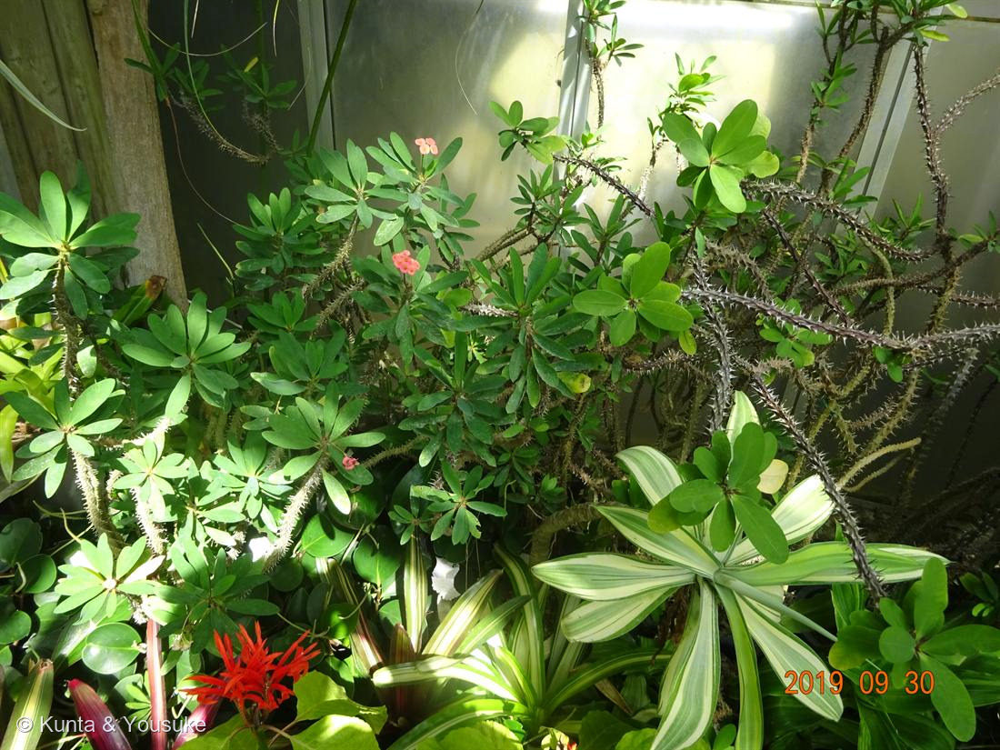

地図を読み込んでいるよ…
🔍 写真も地図も、押しているあいだ拡大して見られるよ（スマホは指を置いてすこし待ってね）。
🌍 の地図＝この子がもともと自生している場所を緑に。マダガスカル。
⭐マダガスカル。──057 ニチニチソウと同じ島の子だね。
⚠ 地図は国（日本と中国だけ県・省）までしか塗れないから、ほんとうの分布より広く見えていることがあるよ。地図はだいたいの場所。正確なところは、上の文を見てね。
ハナキリン（花麒麟）
Euphorbia milii Des Moul.
英名 · Crown of thorns（キリストの茨の冠）／Christ plant ／ 原産 · マダガスカル
トウダイグサ科 · Euphorbiaceae（トウダイグサ属 Euphorbia）── 062 ハツユキソウ・063 ショウジョウソウと同じ属
星太郎にそっくりシリーズ 第2弾（第1弾＝016 王冠竜）。燻太さんの手がかり4つのうち、3つは大当たり。1つだけ、やさしく訂正させて「うねうね」も「棘も葉も両方」も「大けが」も正解。でも「猛毒」は……
名前の由来 ── キリストの、茨の冠
- Euphorbia（エウフォルビア）＝トウダイグサ属。062 ハツユキソウ・063 ショウジョウソウと同じ属。
- milii（ミリー）＝ミリウス男爵（Baron Milius）にちなむ。かつてのレユニオン島総督で、この植物をフランスに持ち込んだ人。
- ⭐英名 Crown of thorns＝「キリストの茨の冠」。キリストがかぶせられた茨の冠は、この植物だったという伝説から。別名 Christ plant／Christ thorn。──マダガスカルの植物なので、伝説のほうは後づけだけれど、それだけ棘の印象が強かったということ。
- 和名ハナキリン（花麒麟）＝棘だらけの姿を、想像上の霊獣「麒麟」に見立てたもの。花の咲く麒麟。
⭐⭐⭐ 燻太さんの「棘も葉っぱも両方もっている」── ど真ん中、そして4つ目のトゲ
- これが、この子のいちばんの見どころ。よく気づいたなあ。
- 016 王冠竜（サボテン）は、葉を捨てて、刺にした。だからサボテンには葉がない。──ところがこの子は、葉を持ったまま、別のものを棘にした。
- ⭐⭐⭐棘の正体は、托葉（stipule）＝葉のつけ根にある小さな葉のようなもの——それが変形した托葉起源の棘（stipular spine）。長さ1.5〜3cm。葉を犠牲にしていないから、葉と棘が同居できる。
- ⭐⭐030 バラに書いた「トゲの出どころ」に、4つ目が加わったよ：
・皮刺（prickle）＝表皮起源……030 バラ（横に押すとポロッと取れる）
・刺（spine）＝葉起源……016 王冠竜（サボテン）
・棘（thorn）＝枝起源……サンザシ
・托葉棘（stipular spine）＝托葉起源……072 ハナキリン ← new - ──「とげ」というひとつの言葉の下に、四つの別々の器官が隠れている。見た目はどれも同じ「痛いやつ」なのに。
⭐⭐ 燻太さんの「他の植物たちに紛れて、うねうね」── それが、この子の作戦
- この子は、自分でまっすぐ立つ木じゃない。他の植物によじ登って広がる（scrambling）。
- ⭐だから棘は、身を守るためだけの道具じゃない。よじ登るときに引っかける「カギ爪」でもある。Wikipedia は棘の役目を「aid the plant in scrambling over other plants（他の植物をよじ登るのを助ける）」と書いている。
- ⭐⭐そうやって伸びて、最後には「dense and impenetrable wall（濃く、通り抜けられない壁）」になる。──「他の植物たちに紛れて」いるのは、偶然じゃなかった。そういう作戦だった。燻太さんが「凶悪そう」って感じたの、正しかったよ。
⭐⭐⭐ 「ピンク色の花に気を取られていると」── そのピンク、花びらじゃない
- 燻太さんが「気を取られる」って言ったあのピンク、じつは花びらじゃないんだ。正体は2枚1対の苞（bract）＝葉の変形。
- ⭐写真を拡大すると分かる：ピンクは必ず2枚ずつ対になっていて、その真ん中に黄色い小さな粒がある。──あの黄色い粒のほうが、本当の花。
- ⭐⭐⭐中身は 062 ハツユキソウとまったく同じ杯状花序（cyathium）。小さな杯の中に、花びらのない雌花が1つ＋雄しべだけの雄花たち。トウダイグサ属だけの独特のつくり。──062 で覚えたあの構造が、こんな棘だらけの子にも、そのまま入っている。
- → 図鑑の小道「見た目と正体がちがう」へ。003 スイレンボク（萼）・014 ニゲラ（萼）・025 ドクダミ（総苞）・029 コエビソウ（苞）・048 カラー（仏炎苞）・062 ハツユキソウ（付属体）・070 チユウキンレン（苞）に続く。この一族、看板を出すのが本当にうまい。
⭐⭐ 062 が名前だけで書いた「サボテンそっくりの親戚」── その実物
- ぼくは 062 ハツユキソウのページに、こう書いた：「同じトウダイグサ属には、サボテンにそっくりな多肉がたくさんいる。でもサボテン科（016 王冠竜）とはまったくの別科＝他人の空似（収れん）」。
- ⭐その実物が、これ。茎が太く、棘があり、多肉質。016 王冠竜とならべると、他人の空似ぶりがよくわかる。──そして同じ Euphorbia 属の中に、062 のあの華奢な白ふちの草と、この棘の塊が、両方いる。すがたのふり幅が、とんでもない一族。
- ⭐見分けのいちばん確かな方法＝切ると白い乳液が出るのがユーフォルビア。サボテンは出ない。花屋で「サボテン」として売られている中に、じつはユーフォルビアが混じっていることがあるよ。
⚠ 燻太さんの「猛毒だって聞いたことある」── ここだけ、やさしく訂正させて
- 調べたら、「猛毒」というほどではなかった。Wikipedia は「The sap is moderately poisonous（そこそこ有毒）」、ノースカロライナ州立大学の植物データベースは「Low severity poison（毒性は低い区分）」としている。061 キョウチクトウの ⚠⚠⚠ とは、レベルがちがう。
- ⚠でも、侮ってはいけない。全部位が有毒。白い乳液は軽度〜重度の接触皮膚炎を起こす。目に入ると角膜を傷め、一時的〜永久的な損傷になりうる。口に入れると唇や口の粘膜に水疱。家畜には強い毒性。──だから燻太さんの「大けがしちゃうよ」という感じ方は、やっぱり正しい。棘だけじゃなく、乳液にも気をつけて。
⭐⭐⭐ その毒は、燻太さんの研究室にもいる ── ホルボールエステル
- ⭐毒の成分は「ホルボールエステル（phorbol ester）」。──燻太さん、この分子の一族、見たことがあるんじゃないかな。
- 同じトウダイグサ科のハズ（Croton tiglium）の油（croton oil）から、1934年に phorbol が単離された。その誘導体が TPA（12-O-tetradecanoylphorbol-13-acetate）＝別名 PMA。
- ⭐⭐TPA／PMA は、プロテインキナーゼC（PKC）を活性化する標準的な試薬であり、古典的な発がんプロモーター。ジアシルグリセロール（DAG）のふりをして PKC をだますことで効く。
- ⭐⭐⭐つまり──この温室の、棘だらけの花がにじませる白い乳液の毒と、細胞生物学の試験管に入っている試薬は、同じ一族の分子。057 ニチニチソウ（花壇の花が抗がん剤になった）と同じで、この図鑑は何度も「植物の毒が、人の道具になる」場面に出会っている。→ 小道「毒と薬 ── 紙一重の贈り物」へ。
この植物のこと
- マダガスカル原産のトウダイグサ科の低木。多肉質の茎に鋭い棘、枝先にへら形の葉をロゼット状につける。日本では鉢物として広く流通し、暖かければほぼ一年じゅう咲く。
- この写真は2019年9月30日13時33分・植物園の温室。──067 カカオ・068 パパイヤ・069 バナナ・070 チユウキンレンとまったく同じ日、同じ温室。前日の071 ハマゴウは城ヶ崎海岸だったから、海岸の翌日に、温室に行ったんだね。
- おまけ植物はキリン角（Euphorbia grandicornis）。上に書いた「サボテンそっくりのユーフォルビア」の代表格で、花屋やホームセンターの多肉コーナー、植物園の温室で会える。ハナキリンと同じ「キリン」の名を持つのもおもしろい。見分けは、やっぱり白い乳液。
参考：Wikipedia "Euphorbia milii"（原産・scrambling・苞・毒性・命名の由来）／NC State Extension Gardener Plant Toolbox（毒性の区分・症状）／Succulentes.net（棘の托葉起源）／Wikipedia "TPA"（croton oil 由来・PKC 活性化・発がんプロモーター）